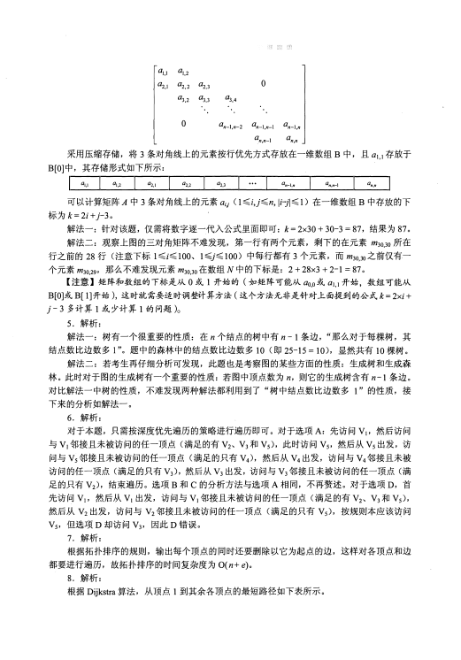
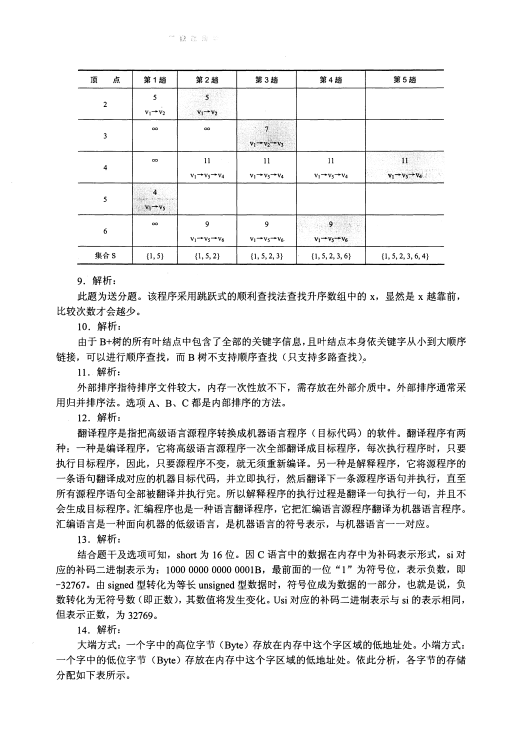
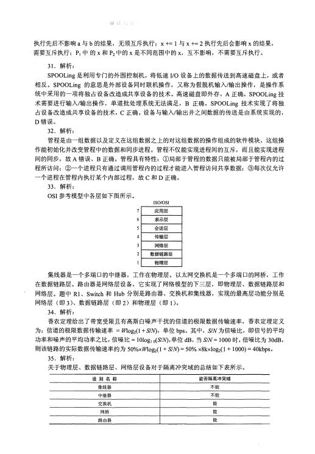
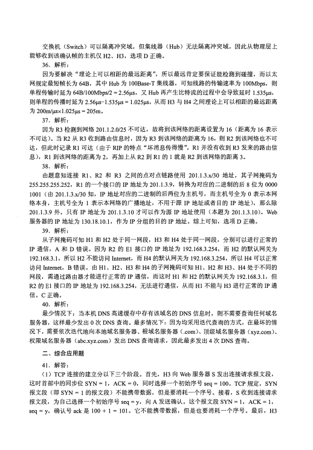
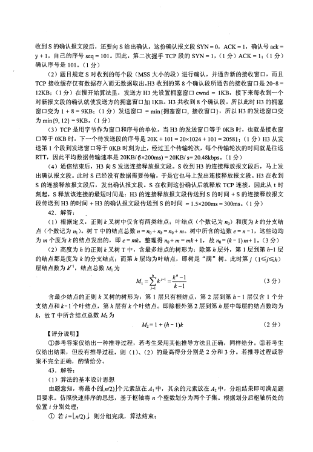
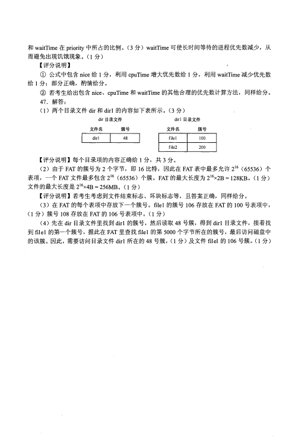

第 1 / 12 页

2016 年计算机学科专业基础综合试题参考答案
一、单项选择题
I.
D
2.
9.
B
10.
17.
C
18.
25:
C
26.
33.
C
34.
I. 解析：
根据存储状态，单链表的结构如下图所示。
DABAC
....
.l975
31l23
CDB
BD
4.
12.
20.
28.
36.
BCA
DB
5.
13.
21.
29.
37.
CDAAB
6.
14.
22.
30.
38.
DAACD
7.
15.
23.
31.
39.
BCADC
8.
16.
24.
32.
40.
BCBAC
1008H
1000H
1010H
101411 三
二
其中“链接地址”是指结点next 所指的内存地址。当结点f 插入后，
a 指向
f,
f 指向e,
e 指向
b 。显然a 、
e 和
f 的“链接地址”分别是f、
b 和
e 的内存地址，即1014H 、
1004H 和1010H 。
2. 解析：
此类题的解题思路万变不离其宗，无论是链表的插入还是删除都必须保证不断链。
3. 解析：
在确保队列先进先出原则的前提下。根据题意具体分析：入队顺序为8,4, 2, 5, 3, 9, 1, 6, 7,
出队顺序为1~9 。入口和出口之间有多个队列
(n 条轨道），且每个队列（轨道）可容纳多个元
素（多列列车）。如此分析：显然先入队的元素必须小千后入队的元素（如果8 和4 入同一队列，
8 在前4 在后，那么出队时只能是8 在前4 在后），这样8 入队列
1,
4 入队列2,
2 入队列3, 5
入队列2 (按照前面的原则“大的元素在小的元素后面”也可以将5 入队列3, 但这时剩下的元
素3 就必须放到一个新的队列里面，无法确保”至少“，本应该是将5 入队列2,
再将3 入队列
3, 不增加新队列的情况下，可以满足题意“至少”的要求），
3 入队列3,
9 入队列
1,
这时共
占了3 个队列，后面还有元素1, 直接再占用一个新的队列4,
1 从队列4 出队后，剩下的元素
6 和7 或者入队到队列2 或者入队到队列3( 为简单起见我们不妨设n 个队列的序号分别为1, 2, …,
n), 这样就可以满足题目的要求。综上，共占用了4 个队列。当然还有其他的入队出队的情况，
请考生们自己推演。但要确保满足：O 队列中后面的元素大千前面的元素；＠确保占用最少（即
满足题目中的“至少")的队列。
4. 解析：
三对角矩阵如下图所示。
查看 / 复制本页文字
2016 年计算机学科专业基础综合试题参考答案 一、单项选择题 I. D 2. 9. B 10. 17. C 18. 25: C 26. 33. C 34. I. 解析： 根据存储状态，单链表的结构如下图所示。 DABAC .... .l975 31l23 CDB BD 4. 12. 20. 28. 36. BCA DB 5. 13. 21. 29. 37. CDAAB 6. 14. 22. 30. 38. DAACD 7. 15. 23. 31. 39. BCADC 8. 16. 24. 32. 40. BCBAC 1008H 1000H 1010H 101411 三 二 其中“链接地址”是指结点next 所指的内存地址。当结点f 插入后， a 指向 f, f 指向e, e 指向 b 。显然a 、 e 和 f 的“链接地址”分别是f、 b 和 e 的内存地址，即1014H 、 1004H 和1010H 。 2. 解析： 此类题的解题思路万变不离其宗，无论是链表的插入还是删除都必须保证不断链。 3. 解析： 在确保队列先进先出原则的前提下。根据题意具体分析：入队顺序为8,4, 2, 5, 3, 9, 1, 6, 7, 出队顺序为1~9 。入口和出口之间有多个队列 (n 条轨道），且每个队列（轨道）可容纳多个元 素（多列列车）。如此分析：显然先入队的元素必须小千后入队的元素（如果8 和4 入同一队列， 8 在前4 在后，那么出队时只能是8 在前4 在后），这样8 入队列 1, 4 入队列2, 2 入队列3, 5 入队列2 (按照前面的原则“大的元素在小的元素后面”也可以将5 入队列3, 但这时剩下的元 素3 就必须放到一个新的队列里面，无法确保”至少“，本应该是将5 入队列2, 再将3 入队列 3, 不增加新队列的情况下，可以满足题意“至少”的要求）， 3 入队列3, 9 入队列 1, 这时共 占了3 个队列，后面还有元素1, 直接再占用一个新的队列4, 1 从队列4 出队后，剩下的元素 6 和7 或者入队到队列2 或者入队到队列3( 为简单起见我们不妨设n 个队列的序号分别为1, 2, …, n), 这样就可以满足题目的要求。综上，共占用了4 个队列。当然还有其他的入队出队的情况， 请考生们自己推演。但要确保满足：O 队列中后面的元素大千前面的元素；＠确保占用最少（即 满足题目中的“至少")的队列。 4. 解析： 三对角矩阵如下图所示。
第 2 / 12 页

01,1 a1,2
a2,I a2.2 a2,3
。
aJ,2 a3,3
03,4
。
a n- 1 ,n-2 a n-l,n-1 a n一l,n
a n,n- 1
a n,n
采用压缩存储，将3条对角线上的元素按行优先方式存放在一维数组B中，且a1,1存放于
B[O]中，其存储形式如下所示：
I 01.1 I
。1;1. I 02, 1 I 02,2 I 02,3 I "'• I
an-1,n I
0n.n-l I
0n,n I
可以计算矩阵A中3条对角线上的元素a;j Cl-i,j-n, li-jl-l) 在一维数组B中存放的下
标为k=2i+j-3。
解法一：针对该题，仅需将数字逐一代入公式里面即可：k= 2x30 + 30-3 = 87, 结果为87。
解法二：观察上图的三对角矩阵不难发现，第一行有两个元素，剩下的在元素m30,Jo所在
行之前的28行（注意下标l-i-lOO、1冬;-100) 中每行都有3个元素，而m30,Jo之前仅有一
个元素m30,29, 那么不难发现元素m30,30在数组N中的下标是：2 + 28x3 + 2-1 = 87。
【注意】矩阵和数组的下标是从0或1 开始的（如矩阵可能从ao ,o或a1,1开始，数组可能从
B[O]或B[l]开始），这时就需要适时调整计算方法（这个方法无非是针对上面提到的公式k=2x i+
j - 3多计算1或少计算1的问题）。
5. 解析：
解法一：树有一个很重要的性质：在n个结点的树中有n - 1条边，
“那么对千每棵树，其
结点数比边数多1"。题中的森林中的结点数比边数多10 (即25-15 = 10), 显然共有10棵树。
解法二：若考生再仔细分析可发现，此题也是考察图的某些方面的性质：生成树和生成森
林。此时对于图的生成树有一个重要的性质：若图中顶点数为n, 则它的生成树含有n 一1条边。
对比解法一中树的性质，不难发现两种解法都利用到了
“ 树中结点数比边数多1"的性质，接
下来的分析如解法一。
6. 解析：
对于本题，只需按深度优先遍历的策略进行遍历即可。对千选项A: 先访问Vi, 然后访问
与V 1邻接且未被访问的任一顶点（满足的有V2、V3 和Vs), 此时访问Vs, 然后从Vs出发，访
问与Vs邻接且未被访问的任一顶点（满足的只有V4), 然后从V4出发，访问与V4邻接且未被
访问的任一顶点（满足的只有V立然后从V3出发，访问与V3邻接且未被访问的任一顶点（满
足的只有V2), 结束遍历。选项B和C的分析方法与选项A相同，不再赘述。对千选项D, 首
先访问V i, 然后从V1出发，访问与V1邻接且未被访问的任一顶点（满足的有V2、V3和Vs),
然后从巧出发，访问与V2 邻接且未被访问的任一顶点（满足的只有Vs), 按规则本应该访问
Vs, 但选项D却访问V3,
因此D错误。
7. 解析：
根据拓扑排序的规则，输出每个顶点的同时还要删除以它为起点的边，这样对各顶点和边
都要进行遍历，故拓扑排序的时间复杂度为O(n+ e)。
8. 解析：
根据Dijkstra算法，从顶点1到其余各顶点的最短路径如下表所示。
查看 / 复制本页文字
01,1 a1,2 a2,I a2.2 a2,3 。 aJ,2 a3,3 03,4 。 a n- 1 ,n-2 a n-l,n-1 a n一l,n a n,n- 1 a n,n 采用压缩存储，将3条对角线上的元素按行优先方式存放在一维数组B中，且a1,1存放于 B[O]中，其存储形式如下所示： I 01.1 I 。1;1. I 02, 1 I 02,2 I 02,3 I "'• I an-1,n I 0n.n-l I 0n,n I 可以计算矩阵A中3条对角线上的元素a;j Cl-i,j-n, li-jl-l) 在一维数组B中存放的下 标为k=2i+j-3。 解法一：针对该题，仅需将数字逐一代入公式里面即可：k= 2x30 + 30-3 = 87, 结果为87。 解法二：观察上图的三对角矩阵不难发现，第一行有两个元素，剩下的在元素m30,Jo所在 行之前的28行（注意下标l-i-lOO、1冬;-100) 中每行都有3个元素，而m30,Jo之前仅有一 个元素m30,29, 那么不难发现元素m30,30在数组N中的下标是：2 + 28x3 + 2-1 = 87。 【注意】矩阵和数组的下标是从0或1 开始的（如矩阵可能从ao ,o或a1,1开始，数组可能从 B[O]或B[l]开始），这时就需要适时调整计算方法（这个方法无非是针对上面提到的公式k=2x i+ j - 3多计算1或少计算1的问题）。 5. 解析： 解法一：树有一个很重要的性质：在n个结点的树中有n - 1条边， “那么对千每棵树，其 结点数比边数多1"。题中的森林中的结点数比边数多10 (即25-15 = 10), 显然共有10棵树。 解法二：若考生再仔细分析可发现，此题也是考察图的某些方面的性质：生成树和生成森 林。此时对于图的生成树有一个重要的性质：若图中顶点数为n, 则它的生成树含有n 一1条边。 对比解法一中树的性质，不难发现两种解法都利用到了 “ 树中结点数比边数多1"的性质，接 下来的分析如解法一。 6. 解析： 对于本题，只需按深度优先遍历的策略进行遍历即可。对千选项A: 先访问Vi, 然后访问 与V 1邻接且未被访问的任一顶点（满足的有V2、V3 和Vs), 此时访问Vs, 然后从Vs出发，访 问与Vs邻接且未被访问的任一顶点（满足的只有V4), 然后从V4出发，访问与V4邻接且未被 访问的任一顶点（满足的只有V立然后从V3出发，访问与V3邻接且未被访问的任一顶点（满 足的只有V2), 结束遍历。选项B和C的分析方法与选项A相同，不再赘述。对千选项D, 首 先访问V i, 然后从V1出发，访问与V1邻接且未被访问的任一顶点（满足的有V2、V3和Vs), 然后从巧出发，访问与V2 邻接且未被访问的任一顶点（满足的只有Vs), 按规则本应该访问 Vs, 但选项D却访问V3, 因此D错误。 7. 解析： 根据拓扑排序的规则，输出每个顶点的同时还要删除以它为起点的边，这样对各顶点和边 都要进行遍历，故拓扑排序的时间复杂度为O(n+ e)。 8. 解析： 根据Dijkstra算法，从顶点1到其余各顶点的最短路径如下表所示。
第 3 / 12 页

顶
点
第1趟
第2趟
第3趟
第4趟
第5趟
5
2
Vt
一V2
',v1-v2
=
=
3
I
•<.·
.<>
00
II
11
11
4
'\1'1一Vs-:+V4,
Vt
一V5
一V4
v, 一V5
一V4
V1 一V5-+V4
5
沁立沪｀，.
忒:·沁.'. MJ:
｝ .J、芯
0 -+从4, .. V
.
s
• .. .
cc
=
9
9
6
vi-vs 一V6
v, 一Vs
一Y6
v1-vs-v6
集合S
{l, 5}
{1, 5, 2}
{I, 5, 2, 3}
{I, 5, 2, 3, 6}
{!, 5, 2, 3, 6, 4}
9. 解析：
此题为送分题。该程序采用跳跃式的顺利查找法查找升序数组中的X, 显然是x越靠前，
比较次数才会越少。
10. 解析：
由于B+树的所有叶结点中包含了全部的关键字信息，且叶结点本身依关键字从小到大顺序
链接，可以进行顺序查找，而B树不支持顺序查找（只支持多路查找）。
11. 解析：
外部排序指待排序文件较大，内存一次性放不下，需存放在外部介质中。外部排序通常采
用归并排序法。选项A、B、C都是内部排序的方法。
12. 解析：
翻译程序是指把高级语言源程序转换成机器语言程序（目标代码）的软件。翻译程序有两
种：
一种是编译程序，它将高级语言源程序一次全部翻译成目标程序，每次执行程序时，只要
执行目标程序，因此，只要源程序不变，就无须重新编译。另一种是解释程序，它将源程序的
一条语旬翻译成对应的机器目标代码，并立即执行，然后翻译下一条源程序语句并执行，直至
所有源程序语句全部被翻译并执行完。所以解释程序的执行过程是翻译一句执行一句，并且不
会生成目标程序。汇编程序也是一种语言翻译程序，它把汇编语言源程序翻译为机器语言程序。
汇编语言是一种面向机器的低级语言，是机器语言的符号表示，与机器语言一一对应。
13. 解析：
结合题干及选项可知，short为16位。因C语言中的数据在内存中为补码表示形式，si对
应的补码二进制表示为：1000 0000 0000 0001B, 最前面的一位"1" 为符号位，表示负数，即
-32767。由signed型转化为等长unsigned型数据时，符号位成为数据的一部分，也就是说，负
数转化为无符号数（即正数），其数值将发生变化。Usi对应的补码二进制表示与si的表示相同，
但表示正数，为32769。
14. 解析：
大端方式：
一个字中的高位字节(Byte)存放在内存中这个字区域的低地址处。小端方式：
一个字中的低位字节(Byte)存放在内存中这个字区域的低地址处。依此分析，各字节的存储
分配如下表所示。
查看 / 复制本页文字
顶
点
第1趟
第2趟
第3趟
第4趟
第5趟
5
2
Vt
一V2
',v1-v2
=
=
3
I
•<.·
.<>
00
II
11
11
4
'\1'1一Vs-:+V4,
Vt
一V5
一V4
v, 一V5
一V4
V1 一V5-+V4
5
沁立沪｀，.
忒:·沁.'. MJ:
｝ .J、芯
0 -+从4, .. V
.
s
• .. .
cc
=
9
9
6
vi-vs 一V6
v, 一Vs
一Y6
v1-vs-v6
集合S
{l, 5}
{1, 5, 2}
{I, 5, 2, 3}
{I, 5, 2, 3, 6}
{!, 5, 2, 3, 6, 4}
9. 解析：
此题为送分题。该程序采用跳跃式的顺利查找法查找升序数组中的X, 显然是x越靠前，
比较次数才会越少。
10. 解析：
由于B+树的所有叶结点中包含了全部的关键字信息，且叶结点本身依关键字从小到大顺序
链接，可以进行顺序查找，而B树不支持顺序查找（只支持多路查找）。
11. 解析：
外部排序指待排序文件较大，内存一次性放不下，需存放在外部介质中。外部排序通常采
用归并排序法。选项A、B、C都是内部排序的方法。
12. 解析：
翻译程序是指把高级语言源程序转换成机器语言程序（目标代码）的软件。翻译程序有两
种：
一种是编译程序，它将高级语言源程序一次全部翻译成目标程序，每次执行程序时，只要
执行目标程序，因此，只要源程序不变，就无须重新编译。另一种是解释程序，它将源程序的
一条语旬翻译成对应的机器目标代码，并立即执行，然后翻译下一条源程序语句并执行，直至
所有源程序语句全部被翻译并执行完。所以解释程序的执行过程是翻译一句执行一句，并且不
会生成目标程序。汇编程序也是一种语言翻译程序，它把汇编语言源程序翻译为机器语言程序。
汇编语言是一种面向机器的低级语言，是机器语言的符号表示，与机器语言一一对应。
13. 解析：
结合题干及选项可知，short为16位。因C语言中的数据在内存中为补码表示形式，si对
应的补码二进制表示为：1000 0000 0000 0001B, 最前面的一位"1" 为符号位，表示负数，即
-32767。由signed型转化为等长unsigned型数据时，符号位成为数据的一部分，也就是说，负
数转化为无符号数（即正数），其数值将发生变化。Usi对应的补码二进制表示与si的表示相同，
但表示正数，为32769。
14. 解析：
大端方式：
一个字中的高位字节(Byte)存放在内存中这个字区域的低地址处。小端方式：
一个字中的低位字节(Byte)存放在内存中这个字区域的低地址处。依此分析，各字节的存储
分配如下表所示。
第 4 / 12 页

地址
0000 8040H
OO(i0.8041H
内容
88H
77H
地址
0000 8044H
00008045H
内容
44H
33H
从而存储单元0000 8
04 6H 中存放的是22H。
15. 解析：
0000.804.ZH
00008043H
66H
55H
0000 8046H
00008047H
22H
l!H
分析语旬"a[k]= a[k] + 32": 首先读取a[k]需要访问一次a[k], 之后将结果赋值给a[k]需要
访问一次，共访问两次。第一次访问a[k]未命中，并将该字所在的主存块调入Cache对应的块
中，对于该主存块中的4个整数的两次访问中只在访问第一次的第一个元素时发生缺失，其他
的7次访问中全部命中，故该程序段执行过程中访问数组a的Cache缺失率约为1/8(即1 2.5%)。
16. 解析：
SFFF-4 000 + 1 = 2000H, 即ROM区容量为i3B= 8KB
(2000H = 2x163= i3), RAM区容量
为56KB(64KB-8KB
= 56KB), 则需要8Kx4位的SRAM芯片的数量为14(56KB/8Kx4位=14 )。
17. 解析：
变址寻址中，有效地址EA等于指令字中的形式地址D 与变址寄存器I的内容相加之和，
即EA= (I)+ D。间接寻址是相对于直接寻址而言的，指令的地址字段给出的形式地址不是操作
数的真正地址，而是操作数地址的地址，即EA=(D)。从而该操作数的有效地址是((I)+ D)。
18 . 解析：
程序计数器(PC)给出下一条指令字的访存地址（指令在内存中的地址），取决于存储器
的字数( 4GB/32bit= 230), 故程序计数器(PC) 的位数至少是30位；指令寄存器CIR)用于
接收取得的指令，取决于指令字长( 32位），故指令寄存器CIR) 的位数至少为32位。
19. 解析：
数据冒险，即数据相关，指在一个程序中存在必须等前一条指令执行完才能执行后一条指
令的情况，则这两条指令即为数据相关。当多条指令重叠处理时就会发生冲突。首先这两条指
令发生写后读相关，并且两条指令在流水线中执行情况（发生数据冒险）如下表所示。
Ɵ
1
2
3
4
5
6
7
12
取指
译码I读寄
存器
运算
访存
写回
I3
取指
译码／读寄
存器
运算
访存
写回
指令12在时钟5 时将结果写入寄存器(R5), 但指令13在时钟3时读寄存器(R5)。本来
指令12应先写入R5, 指令13后读R5, 结果变成指令13先读R5, 指令12后写入R5, 因而发
生数据冲突。
20. 解析：
单周期处理器即指所有指令的指令周期为一个时钟周期，D正确。因为每条指令的CPI为I,
要考虑比较慢的指令，所以处理器的时钟频率较低，B正确。单总线结构将CPU、主存、1/0
设备都挂在一组总线上，允许1/0设备之间、1 /0设备与主存之间直接交换信息，但多个部件只
能争用唯一的总线，且不支持并发传送操作。单周期处理器并不是可以采用单总线结构数据通
路，故A错误。控制信号即指PC 中的内容，PC用来存放当前欲执行指令的地址，可以自动
查看 / 复制本页文字
地址 0000 8040H OO(i0.8041H 内容 88H 77H 地址 0000 8044H 00008045H 内容 44H 33H 从而存储单元0000 8 04 6H 中存放的是22H。 15. 解析： 0000.804.ZH 00008043H 66H 55H 0000 8046H 00008047H 22H l!H 分析语旬"a[k]= a[k] + 32": 首先读取a[k]需要访问一次a[k], 之后将结果赋值给a[k]需要 访问一次，共访问两次。第一次访问a[k]未命中，并将该字所在的主存块调入Cache对应的块 中，对于该主存块中的4个整数的两次访问中只在访问第一次的第一个元素时发生缺失，其他 的7次访问中全部命中，故该程序段执行过程中访问数组a的Cache缺失率约为1/8(即1 2.5%)。 16. 解析： SFFF-4 000 + 1 = 2000H, 即ROM区容量为i3B= 8KB (2000H = 2x163= i3), RAM区容量 为56KB(64KB-8KB = 56KB), 则需要8Kx4位的SRAM芯片的数量为14(56KB/8Kx4位=14 )。 17. 解析： 变址寻址中，有效地址EA等于指令字中的形式地址D 与变址寄存器I的内容相加之和， 即EA= (I)+ D。间接寻址是相对于直接寻址而言的，指令的地址字段给出的形式地址不是操作 数的真正地址，而是操作数地址的地址，即EA=(D)。从而该操作数的有效地址是((I)+ D)。 18 . 解析： 程序计数器(PC)给出下一条指令字的访存地址（指令在内存中的地址），取决于存储器 的字数( 4GB/32bit= 230), 故程序计数器(PC) 的位数至少是30位；指令寄存器CIR)用于 接收取得的指令，取决于指令字长( 32位），故指令寄存器CIR) 的位数至少为32位。 19. 解析： 数据冒险，即数据相关，指在一个程序中存在必须等前一条指令执行完才能执行后一条指 令的情况，则这两条指令即为数据相关。当多条指令重叠处理时就会发生冲突。首先这两条指 令发生写后读相关，并且两条指令在流水线中执行情况（发生数据冒险）如下表所示。 Ɵ 1 2 3 4 5 6 7 12 取指 译码I读寄 存器 运算 访存 写回 I3 取指 译码／读寄 存器 运算 访存 写回 指令12在时钟5 时将结果写入寄存器(R5), 但指令13在时钟3时读寄存器(R5)。本来 指令12应先写入R5, 指令13后读R5, 结果变成指令13先读R5, 指令12后写入R5, 因而发 生数据冲突。 20. 解析： 单周期处理器即指所有指令的指令周期为一个时钟周期，D正确。因为每条指令的CPI为I, 要考虑比较慢的指令，所以处理器的时钟频率较低，B正确。单总线结构将CPU、主存、1/0 设备都挂在一组总线上，允许1/0设备之间、1 /0设备与主存之间直接交换信息，但多个部件只 能争用唯一的总线，且不支持并发传送操作。单周期处理器并不是可以采用单总线结构数据通 路，故A错误。控制信号即指PC 中的内容，PC用来存放当前欲执行指令的地址，可以自动
第 5 / 12 页

+1以形成下一条指令的地址。在指令执行过程中控制信号不变化。
21. 解析：
初看可能会觉得A正确，并行总线传输通常比串行总线传输速度快，但这不是绝对的。在
实际时钟频率比较低的情况下，并行总线因为可以同时传输若干比特，速率确实比串行总线快。
但是，随着技术的发展，时钟频率越来越高，并行导线之间的相互干扰越来越严重，当时钟频
率提高到一定程度时，传输的数据已经无法恢复。而串行总线因为导线少，线间干扰容易控制，
反而可以通过不断提高时钟频率来提高传输速率，A错误。总线复用是指一种信号线在不同的
时间传输不同的信息。可以使用较少的线路传输更多的信息，从而节省了空间和成本。故B正
确。突发（猝发）传输是在一个总线周期中，可以传输多个存储地址连续的数据，即一次传输
一个地址和一批地址连续的数据，C正确。分离事务通信即总线复用的一种，相比单一的传输
线路可以提高总线的利用率，D正确。
22. 解析：
中断是指来自CPU 执行指令以外事件的发生，如设备发出的1/0结束中断，表示设备输入／
输出处理已经完成，希望处理机能够向设备发出下一个输入／输出请求，同时让完成输入／输出后
的程序继续运行。时钟中断，表示一个固定的时间片已到，让处理机处理计时、启动定时运行
的任务等。这一类中断通常是与当前程序运行无关的事件，即它们与当前处理机运行的程序无
关。异常也称内中断、例外或陷入(Trap), 指源自CPU执行指令内部的事件，如程序的非法
操作码、地址越界、算术溢出、虚存系统的缺页以及专门的陷入指令等引起的事件。A错误。
23. 解析：
批处理系统中，作业执行时用户无法干预其运行，只能通过事先编制作业控制说明书来间
接干预，缺少交互能力，也因此才发展出分时系统，I错误。批处理系统按发展历程又分为单道
批处理系统、多道批处理系统，II正确。多道程序设计技术允许同时把多个程序放入内存，并
允许它们交替在CPU 中运行，它们共享系统中的各种硬、软件资源，当一道程序因1/0请求而
暂停运行时，CPU便立即转去运行另一道程序，即多道批处理系统的1/0设备可与CPU并行工
作，这都是借助于中断技术实现的，III正确。
24. 解析：
这类调度题目最好画图。因CPU、输入设备、输出设备都只有一个，因此各操作步骤不能
重叠，画出运行时的甘特图后就能清楚地看到不同作业间的时序关系，如下表所示。
作业＼时间
I 1 I 2 I 3 I 4 I 5
输入
计算
13 I 14 I 15 I 16 I 17
2
输入
输出
3
输入
计算
输出
25. 解析：
对于本题，先满足一个进程的资源需求，再看其他进程是否能出现死锁状态。因为p4只申
请一个资源，当将R2 分配给p4后，p4执行完后将R2 释放，这时使得系统满足死锁的条件是R1
分配给P 1 • R2分配给P2• R3 分配给p3 (或者R2分配给P1• R3 分配给P2• R, 分配给p3)。穷举
其他情况如Pt申请的资源民和R2, 先都分配给pl, 运行完并释放占有的资源后，可以分别将
R1、R2和R3 分配给p3、p4和P2 • 也满足系统死锁的条件。各种情况需要使得处于死锁状态的
进程数至少为3。
26. 解析：
改进型的CLOCK置换算法执行的步骤如下：
查看 / 复制本页文字
+1以形成下一条指令的地址。在指令执行过程中控制信号不变化。 21. 解析： 初看可能会觉得A正确，并行总线传输通常比串行总线传输速度快，但这不是绝对的。在 实际时钟频率比较低的情况下，并行总线因为可以同时传输若干比特，速率确实比串行总线快。 但是，随着技术的发展，时钟频率越来越高，并行导线之间的相互干扰越来越严重，当时钟频 率提高到一定程度时，传输的数据已经无法恢复。而串行总线因为导线少，线间干扰容易控制， 反而可以通过不断提高时钟频率来提高传输速率，A错误。总线复用是指一种信号线在不同的 时间传输不同的信息。可以使用较少的线路传输更多的信息，从而节省了空间和成本。故B正 确。突发（猝发）传输是在一个总线周期中，可以传输多个存储地址连续的数据，即一次传输 一个地址和一批地址连续的数据，C正确。分离事务通信即总线复用的一种，相比单一的传输 线路可以提高总线的利用率，D正确。 22. 解析： 中断是指来自CPU 执行指令以外事件的发生，如设备发出的1/0结束中断，表示设备输入／ 输出处理已经完成，希望处理机能够向设备发出下一个输入／输出请求，同时让完成输入／输出后 的程序继续运行。时钟中断，表示一个固定的时间片已到，让处理机处理计时、启动定时运行 的任务等。这一类中断通常是与当前程序运行无关的事件，即它们与当前处理机运行的程序无 关。异常也称内中断、例外或陷入(Trap), 指源自CPU执行指令内部的事件，如程序的非法 操作码、地址越界、算术溢出、虚存系统的缺页以及专门的陷入指令等引起的事件。A错误。 23. 解析： 批处理系统中，作业执行时用户无法干预其运行，只能通过事先编制作业控制说明书来间 接干预，缺少交互能力，也因此才发展出分时系统，I错误。批处理系统按发展历程又分为单道 批处理系统、多道批处理系统，II正确。多道程序设计技术允许同时把多个程序放入内存，并 允许它们交替在CPU 中运行，它们共享系统中的各种硬、软件资源，当一道程序因1/0请求而 暂停运行时，CPU便立即转去运行另一道程序，即多道批处理系统的1/0设备可与CPU并行工 作，这都是借助于中断技术实现的，III正确。 24. 解析： 这类调度题目最好画图。因CPU、输入设备、输出设备都只有一个，因此各操作步骤不能 重叠，画出运行时的甘特图后就能清楚地看到不同作业间的时序关系，如下表所示。 作业＼时间 I 1 I 2 I 3 I 4 I 5 输入 计算 13 I 14 I 15 I 16 I 17 2 输入 输出 3 输入 计算 输出 25. 解析： 对于本题，先满足一个进程的资源需求，再看其他进程是否能出现死锁状态。因为p4只申 请一个资源，当将R2 分配给p4后，p4执行完后将R2 释放，这时使得系统满足死锁的条件是R1 分配给P 1 • R2分配给P2• R3 分配给p3 (或者R2分配给P1• R3 分配给P2• R, 分配给p3)。穷举 其他情况如Pt申请的资源民和R2, 先都分配给pl, 运行完并释放占有的资源后，可以分别将 R1、R2和R3 分配给p3、p4和P2 • 也满足系统死锁的条件。各种情况需要使得处于死锁状态的 进程数至少为3。 26. 解析： 改进型的CLOCK置换算法执行的步骤如下：
第 6 / 12 页

1)从指针的当前位置开始，扫描帧缓冲区。在这次扫描过程中，对使用位不做任何修改。
选择遇到的第一个帧(A = O, M = O) 用于替换。
2) 如果第I) 步失败，则重新扫描，查找(A = O, M = I)的帧。选择遇到的第一个这样
的帧用于替换。在这个扫描过程中，对每个跳过的帧，把它的使用位设置成0。
3) 如果第2) 步失败，指针将回到它的最初位置，并且集合中所有帧的使用位均为0。重
复第1 步，并且如果有必要，重复第2) 步。这样将可以找到供替换的帧。
从而，该算法淘汰页的次序为(0, 0), (0, 1), (1, 0), (1, 1), 即A 正确。
27. 解析：
当进程退出临界区时置lock 为FALSE, 会负责唤醒处于就绪状态的进程，A错误。若等待
进入临界区的进程会一直停留在执行while(TSL(&lock))的循环中，不会主动放弃CPU, B 正确。
让权等待，即当进程不能进入临界区时，应立即释放处理器，防止进程忙等待。通过B选项的
分析中发现上述伪代码并不满足
“ 让权等待
” 的同步准则，C错误。若while(TSL(&lock))在关
中断状态下执行，当TSL(&lock)一直为true时，不再开中断，则系统可能会因此终止，D错误。
28. 解析：
分段系统的逻辑地址A到物理地址E之间的地址变换过程如下。
越界
控制寄存器
段号s
位移错W
段表始址Fl 段表长度M
2
I
100
I逻辑地址A
物理地址E
主
存
汇勹
O从逻辑地址A中取出前儿位为段号s, 后几位为段内偏移量w, 注意段式存储管理的
题目中，逻辑地址一般以二进制给出，而在页式存储管理中，逻辑地址一般以十进制给出，各
位读者要具体问题具体分析。
＠比较段号S和段表长度M, 若S?=M, 则产生越界异常，否则继续执行。
＠段表中段号S对应的段表项地址＝段表起始地址F+段号sx段表项长度，取出该段
表项的前儿位得到段长C。若段内偏移量?:C, 则产生越界异常，否则继续执行。从这句话我们
可以看出，段表项实际上只有两部分，前几位是段长，后几位是起始地址。
＠取出段表项中该段的起始地址b, 计算E = b+ W, 用得到的物理地址E 去访问内存。
题目中段号为2 的段长为300, 小于段内地址为400, 故发生越界异常，D正确。
29. 解析：
在任一时刻t, 都存在一个集合，它包含所有最近k 次（该题窗口大小为6) 内存访问所访
问过的页面。这个集合w(k, t)就是工作集。该题中最近6次访问的页面分别为6,0, 3, 2, 3, 2, 再
去除重复的页面，形成的工作集为{6,0, 3, 2}。
30. 解析：
P1中对a 进行赋值，并不影响最终的结果，故a = l 与a = 2 不需要互斥执行；a =x 与b=x
查看 / 复制本页文字
1)从指针的当前位置开始，扫描帧缓冲区。在这次扫描过程中，对使用位不做任何修改。
选择遇到的第一个帧(A = O, M = O) 用于替换。
2) 如果第I) 步失败，则重新扫描，查找(A = O, M = I)的帧。选择遇到的第一个这样
的帧用于替换。在这个扫描过程中，对每个跳过的帧，把它的使用位设置成0。
3) 如果第2) 步失败，指针将回到它的最初位置，并且集合中所有帧的使用位均为0。重
复第1 步，并且如果有必要，重复第2) 步。这样将可以找到供替换的帧。
从而，该算法淘汰页的次序为(0, 0), (0, 1), (1, 0), (1, 1), 即A 正确。
27. 解析：
当进程退出临界区时置lock 为FALSE, 会负责唤醒处于就绪状态的进程，A错误。若等待
进入临界区的进程会一直停留在执行while(TSL(&lock))的循环中，不会主动放弃CPU, B 正确。
让权等待，即当进程不能进入临界区时，应立即释放处理器，防止进程忙等待。通过B选项的
分析中发现上述伪代码并不满足
“ 让权等待
” 的同步准则，C错误。若while(TSL(&lock))在关
中断状态下执行，当TSL(&lock)一直为true时，不再开中断，则系统可能会因此终止，D错误。
28. 解析：
分段系统的逻辑地址A到物理地址E之间的地址变换过程如下。
越界
控制寄存器
段号s
位移错W
段表始址Fl 段表长度M
2
I
100
I逻辑地址A
物理地址E
主
存
汇勹
O从逻辑地址A中取出前儿位为段号s, 后几位为段内偏移量w, 注意段式存储管理的
题目中，逻辑地址一般以二进制给出，而在页式存储管理中，逻辑地址一般以十进制给出，各
位读者要具体问题具体分析。
＠比较段号S和段表长度M, 若S?=M, 则产生越界异常，否则继续执行。
＠段表中段号S对应的段表项地址＝段表起始地址F+段号sx段表项长度，取出该段
表项的前儿位得到段长C。若段内偏移量?:C, 则产生越界异常，否则继续执行。从这句话我们
可以看出，段表项实际上只有两部分，前几位是段长，后几位是起始地址。
＠取出段表项中该段的起始地址b, 计算E = b+ W, 用得到的物理地址E 去访问内存。
题目中段号为2 的段长为300, 小于段内地址为400, 故发生越界异常，D正确。
29. 解析：
在任一时刻t, 都存在一个集合，它包含所有最近k 次（该题窗口大小为6) 内存访问所访
问过的页面。这个集合w(k, t)就是工作集。该题中最近6次访问的页面分别为6,0, 3, 2, 3, 2, 再
去除重复的页面，形成的工作集为{6,0, 3, 2}。
30. 解析：
P1中对a 进行赋值，并不影响最终的结果，故a = l 与a = 2 不需要互斥执行；a =x 与b=x
第 7 / 12 页

执行先后不影响a与b的结果，无须互斥执行；X += I与x+=2 执行先后会影响x的结果，
需要互斥执行；P, 中的x和P2中的x是不同范围中的X, 互不影响，不需要互斥执行。
31. 解析：
SPOOLing是利用专门的外围控制机，将低速1/0设备上的数据传送到高速磁盘上，或者
相反。SPOOLing 的意思是外部设备同时联机操作，又称为假脱机输入／输出操作，是操作系
统中采用的一项将独占设备改造成共享设备的技术。高速磁盘即外存，A正确。SPOOLing技
术需要进行输入／输出操作，单道批处理系统无法满足，B正确。SPOOLing 技术实现了将独
占设备改造成共享设备的技术，C正确。设备与输入／输出井之间数据的传送是由系统实现的，
D错误。
32. 解析：
管程是由一组数据以及定义在这组数据之上的对这组数据的操作组成的软件模块，这组操
作能初始化并改变管程中的数据和同步进程。管程不仅能实现进程间的互斥，而且能实现进程
间的同步，故A错误、B正确。管程具有特性：＠局部于管程的数据只能被局部于管程内的过
程所访问；＠一个进程只有通过调用管程内的过程才能进入管程访问共享数据；＠每次仅允许
一个进程在管程内执行某个内部过程，故C和D正确。
33. 解析：
OSI参考模型中各层如下图所示。
ISO/OSl
765432l
应用层
表示层
会话层
传输层
网络层
数据链路层
物理层
集线器是一个多端口的中继器，工作在物理层。以太网交换机是一个多端口的网桥，工作
在数据链路层。路由器是网络层设备，它实现了网络模型的下三层，即物理层、数据链路层和
网络层。题中Rl、Switch和Hub分别是路由器、交换机和集线器，实现的最高层功能分别是
网络层（即3)、数据链路层（即2) 和物理层（即1)。
34. 解析：
香农定理给出了带宽受限且有高斯白噪声干扰的信道的极限数据传输速率，香衣定理定义
为：信道的极限数据传输速率＝叭og2(1 +SIN), 单位bps。其中，SIN为信噪比，即信号的平均
功率和噪声的平均功率之比，信噪比=10log10(S/N), 单位dB, 当SIN=1000时，信噪比为30dB,
则该链路的实际数据传输速率约为50%x叭og2(1 +SIN)= 50% x8kxlogi(l + 1000) = 40kbps。
35. 解析：
关于物理层、数据链路层、网络层设备对于隔离冲突域的总结如下表所示。
设别名称
集线器
中继器
交换机
网桥
路由器
能否隔离冲突域
不能
不能
能
能
能
查看 / 复制本页文字
执行先后不影响a与b的结果，无须互斥执行；X += I与x+=2 执行先后会影响x的结果， 需要互斥执行；P, 中的x和P2中的x是不同范围中的X, 互不影响，不需要互斥执行。 31. 解析： SPOOLing是利用专门的外围控制机，将低速1/0设备上的数据传送到高速磁盘上，或者 相反。SPOOLing 的意思是外部设备同时联机操作，又称为假脱机输入／输出操作，是操作系 统中采用的一项将独占设备改造成共享设备的技术。高速磁盘即外存，A正确。SPOOLing技 术需要进行输入／输出操作，单道批处理系统无法满足，B正确。SPOOLing 技术实现了将独 占设备改造成共享设备的技术，C正确。设备与输入／输出井之间数据的传送是由系统实现的， D错误。 32. 解析： 管程是由一组数据以及定义在这组数据之上的对这组数据的操作组成的软件模块，这组操 作能初始化并改变管程中的数据和同步进程。管程不仅能实现进程间的互斥，而且能实现进程 间的同步，故A错误、B正确。管程具有特性：＠局部于管程的数据只能被局部于管程内的过 程所访问；＠一个进程只有通过调用管程内的过程才能进入管程访问共享数据；＠每次仅允许 一个进程在管程内执行某个内部过程，故C和D正确。 33. 解析： OSI参考模型中各层如下图所示。 ISO/OSl 765432l 应用层 表示层 会话层 传输层 网络层 数据链路层 物理层 集线器是一个多端口的中继器，工作在物理层。以太网交换机是一个多端口的网桥，工作 在数据链路层。路由器是网络层设备，它实现了网络模型的下三层，即物理层、数据链路层和 网络层。题中Rl、Switch和Hub分别是路由器、交换机和集线器，实现的最高层功能分别是 网络层（即3)、数据链路层（即2) 和物理层（即1)。 34. 解析： 香农定理给出了带宽受限且有高斯白噪声干扰的信道的极限数据传输速率，香衣定理定义 为：信道的极限数据传输速率＝叭og2(1 +SIN), 单位bps。其中，SIN为信噪比，即信号的平均 功率和噪声的平均功率之比，信噪比=10log10(S/N), 单位dB, 当SIN=1000时，信噪比为30dB, 则该链路的实际数据传输速率约为50%x叭og2(1 +SIN)= 50% x8kxlogi(l + 1000) = 40kbps。 35. 解析： 关于物理层、数据链路层、网络层设备对于隔离冲突域的总结如下表所示。 设别名称 集线器 中继器 交换机 网桥 路由器 能否隔离冲突域 不能 不能 能 能 能
第 8 / 12 页

交换机(Switch) 可以隔离冲突域，但集线器(Hub)无法隔离冲突域，因此从物理层上
能够收到该确认帧的主机仅H2、H3, 选项D正确。
36. 解析：
因为要解决
“理论上可以相距的最远距离
”，所以最远肯定要保证能检测到碰撞，而以太
网规定最短帧长为64B, 其中Hub为lOOBase-T集线器，可知线路的传输速率为lOOMbps, 则
单程传输时延为64B/l00Mbps/2 = 2.56µs, 又Hub再产生比特流的过程中会导致延时l.535µs,
则单程的传播时延为2.56µs-l.535µs = l.025µs, 从而H3与H4之间理论上可以相距的最远距离
为200m/µsxl.025µs = 205m。
37. 解析：
因为R3检测到网络201.1.2.0/25不可达，故将到该网络的距离设置为16 ( 距离为16表示
不可达）。当R2从R3 收到路由信息时，因为R3到该网络的距离为16, 则R2到该网络也不可
达，但此时记录Rl可达（由千RIP的特点
“ 坏消息传得慢", Rl并没有收到R3发来的路由信
息），Rl到该网络的距离为2, 再加上从R2到Rl的l就是R2到该网络的距离3。
38. 解析：
由题意知连接Rl、R2 和R3 之间的点对点链路使用20l.1.3.x/30地址，其子网掩码为
255.255.255.252, Rl的一个接口的IP地址为201.1.3.9, 转换为对应的二进制的后8位为0000
1001 C由201.l.3.x/30知，IP地址对应的二进制的后两位为主机号，而主机号全为0表示本网
络本身，主机号全为1表示本网络的广播地址，不用于源IP地址或者目的IP地址），那么除
201.l.3.9外，只有IP地址为201.1.3.10才可以作为源IP地址使用（本题为201.1.3.10)。Web
服务器的IP地址为130.18.10.1,
作为IP分组的目的IP地址。综上可知，选项D正确。
39. 解析：
从子网掩码可知Hl和H2处于同一网段，H3和H4处于同一网段，分别可以进行正常的
IP通信，A和D错误。因为R2的El接口的IP地址为192.168.3.254, 而H2的默认网关为
192.168.3.1, 所以H2不能访问Internet,
而H4的默认网关为192.168.3.254, 所以H4可以正常
访问Internet, B错误。由H1、H2、H3和H4的子网掩码可知H1、H2和H3、H4处于不同的
网段，需通过路由器才能进行正常的IP通信，而这时H1和H2的默认网关为192.168.3.l, 但
R2的El接口的IP地址为192.168.3.254,无法进行通信，从而Hl不能与H3进行正常的IP通
信。C正确。
40. 解析：
最少情况下：当本机DNS高速缓存中存有该域名的DNS信息时，则不需要查询任何域名
服务器，这样最少发出0次DNS查询。最多情况下：因为均采用迭代查询的方式，在最坏的情
况下，需要依次迭代地向本地域名服务器、根域名服务器(.com)、顶级域名服务器(xyz.com)、
权限域名服务器(abc.xyz.com) 发出DNS查询请求，因此最多发出4次DNS查询。
二、综合应用题
41. 解答：
(1) TCP 连接的建立分以下三个阶段。首先，H3向Web服务器S发出连接请求报文段，
这时首部中的同步位SYN
= l, ACK = 0, 同时选择一个初始序号seq = 100。TCP规定，SYN
报文段（即SYN= 1的报文段）不能携带数据，但是要消耗一个序号。接着，S 收到连接请求
报文段，为自己选择一个初始序号seq = y, 向A发送确认。这个报文段SYN = 1, ACK = 1,
seq = y, 确认号a ck是100 + 1 = 101。它不能携带数据，但是也要消耗一个序号。最后，H3
查看 / 复制本页文字
交换机(Switch) 可以隔离冲突域，但集线器(Hub)无法隔离冲突域，因此从物理层上 能够收到该确认帧的主机仅H2、H3, 选项D正确。 36. 解析： 因为要解决 “理论上可以相距的最远距离 ”，所以最远肯定要保证能检测到碰撞，而以太 网规定最短帧长为64B, 其中Hub为lOOBase-T集线器，可知线路的传输速率为lOOMbps, 则 单程传输时延为64B/l00Mbps/2 = 2.56µs, 又Hub再产生比特流的过程中会导致延时l.535µs, 则单程的传播时延为2.56µs-l.535µs = l.025µs, 从而H3与H4之间理论上可以相距的最远距离 为200m/µsxl.025µs = 205m。 37. 解析： 因为R3检测到网络201.1.2.0/25不可达，故将到该网络的距离设置为16 ( 距离为16表示 不可达）。当R2从R3 收到路由信息时，因为R3到该网络的距离为16, 则R2到该网络也不可 达，但此时记录Rl可达（由千RIP的特点 “ 坏消息传得慢", Rl并没有收到R3发来的路由信 息），Rl到该网络的距离为2, 再加上从R2到Rl的l就是R2到该网络的距离3。 38. 解析： 由题意知连接Rl、R2 和R3 之间的点对点链路使用20l.1.3.x/30地址，其子网掩码为 255.255.255.252, Rl的一个接口的IP地址为201.1.3.9, 转换为对应的二进制的后8位为0000 1001 C由201.l.3.x/30知，IP地址对应的二进制的后两位为主机号，而主机号全为0表示本网 络本身，主机号全为1表示本网络的广播地址，不用于源IP地址或者目的IP地址），那么除 201.l.3.9外，只有IP地址为201.1.3.10才可以作为源IP地址使用（本题为201.1.3.10)。Web 服务器的IP地址为130.18.10.1, 作为IP分组的目的IP地址。综上可知，选项D正确。 39. 解析： 从子网掩码可知Hl和H2处于同一网段，H3和H4处于同一网段，分别可以进行正常的 IP通信，A和D错误。因为R2的El接口的IP地址为192.168.3.254, 而H2的默认网关为 192.168.3.1, 所以H2不能访问Internet, 而H4的默认网关为192.168.3.254, 所以H4可以正常 访问Internet, B错误。由H1、H2、H3和H4的子网掩码可知H1、H2和H3、H4处于不同的 网段，需通过路由器才能进行正常的IP通信，而这时H1和H2的默认网关为192.168.3.l, 但 R2的El接口的IP地址为192.168.3.254,无法进行通信，从而Hl不能与H3进行正常的IP通 信。C正确。 40. 解析： 最少情况下：当本机DNS高速缓存中存有该域名的DNS信息时，则不需要查询任何域名 服务器，这样最少发出0次DNS查询。最多情况下：因为均采用迭代查询的方式，在最坏的情 况下，需要依次迭代地向本地域名服务器、根域名服务器(.com)、顶级域名服务器(xyz.com)、 权限域名服务器(abc.xyz.com) 发出DNS查询请求，因此最多发出4次DNS查询。 二、综合应用题 41. 解答： (1) TCP 连接的建立分以下三个阶段。首先，H3向Web服务器S发出连接请求报文段， 这时首部中的同步位SYN = l, ACK = 0, 同时选择一个初始序号seq = 100。TCP规定，SYN 报文段（即SYN= 1的报文段）不能携带数据，但是要消耗一个序号。接着，S 收到连接请求 报文段，为自己选择一个初始序号seq = y, 向A发送确认。这个报文段SYN = 1, ACK = 1, seq = y, 确认号a ck是100 + 1 = 101。它不能携带数据，但是也要消耗一个序号。最后，H3
第 9 / 12 页

收到S的确认报文段后，还要向S给出确认。这份确认报文段SYN = O, ACK = 1, 确认号ack =
y + 1, 自己的序号seq = 101。因此，第二次握手TCP段的SYN = I, (I分）ACK = l; (I分）
确认序号是101。(I分）
(2)题目规定S对收到的每个段(MSS大小的段）进行确认，并通告新的接收窗口，而且
TCP接收缓存仅有数据存入而无数据取出。H3收到的第8个确认段所通告的接收窗口是20-8=
12KB; (I分）在慢开始算法里，发送方H3先设置拥塞窗口cwnd = 1KB, 接下来每收到一个
对新报文段的确认就使发送方的拥塞窗口加1KB。H3共收到8个确认段，所以此时H3的拥塞
窗口变为1+ 8 = 9KB; (I分）发送窗口= min{拥塞窗口，接收窗口｝，所以H3的发送窗口变
为min{9, 12} = 9KB。(1分）
(3) TCP 是用字节作为窗口和序号的单位。当H3的发送窗口等于0KB时，也就是接收窗
口等于0KB时，下一个待发送段的序号是20K+ 101 = 20x1024+ 101 = 20581; Cl分）H3从发
送第1个段到发送窗口等于0KB时刻为止，经过五个传输轮次，每个传输轮次的时间就是往返
RTT, 因此平均数据传输速率是20KB/(5x200ms ) = 20KB/s = 20.48kbps。(1分）
(4) 通信结束后，H3向S发送连接释放报文段。S收到H3的连接释放报文段后，马上发
出确认报文段。此时S已经没有数据需要传输，于是它也马上发出连接释放报文段。H3在收到
S的连接释放报文段后，发出确认报文段。S在收到这份确认后就释放TCP连接。因此从t时
刻起，S释放该连接的最短时间是：H3的连接释放报文段传送到S的时间+ S的连接释放报文
段传送到H3的时间+H3的确认报文段传送到S的时间= I.5x200ms = 300ms。(1分）
42. 解答：
(1)根据定义，正则k叉树中仅含有两类结点；叶结点（个数记为n。）和度为K的分支结
点（个数记为n1 )。树T中的结点总数n=n。+nk =n。+m。树中所含的边数e =n-1, 这些边均
为m 个度为K的结点发出的，即e =mk。整理得n。+m =mk+ 1, 故n。=(k-l)m+l。(3分）
(2)高度为h的正则k叉树T中，含最多结点的树形为：除第h层外，第1层到第h一1层
的结点都是度为K的分支结点；而第h层均为叶结点，即树是
“ 满
“ 树。此时第j(I冬;:::.::;h)
层结点数为矿，结点总数M戊
Ml = Lkj一l
k
h -1
j=l
k-1
(3分）
含最少结点的正则K叉树的树形为：第1层只有根结点，第2层到第h-I层仅含1个分
支结点和k-1个叶结点，第h层有K个叶结点。即除根外第2层到第h层中每层的结点数均为
k, 故T中所含结点总数M改
M2= I +( h-I)k
(2分）
【评分说明】
＠参考答案仅给出一种推导过程，若考生采用其他推导方法且正确，同样给分。＠若考生
仅给出结果，但没有推导过程，则(1)、(2) 的最高得分分别是2分和3分。若推导过程或答
案不完全正确，酌情给分。
43. 解答：
(1)算法的基本设计思想
由题意知，将最小的Ln12订个元素放在A 1 中，其余的元素放在A2中，分组结果即可满足题
目要求。仿照快速排序的思想，基于枢轴将n个整数划分为两个子集。根据划分后枢轴所处的
位置i分别处理：
＠若i= Ln12)」，则分组完成，算法结束；
查看 / 复制本页文字
收到S的确认报文段后，还要向S给出确认。这份确认报文段SYN = O, ACK = 1, 确认号ack =
y + 1, 自己的序号seq = 101。因此，第二次握手TCP段的SYN = I, (I分）ACK = l; (I分）
确认序号是101。(I分）
(2)题目规定S对收到的每个段(MSS大小的段）进行确认，并通告新的接收窗口，而且
TCP接收缓存仅有数据存入而无数据取出。H3收到的第8个确认段所通告的接收窗口是20-8=
12KB; (I分）在慢开始算法里，发送方H3先设置拥塞窗口cwnd = 1KB, 接下来每收到一个
对新报文段的确认就使发送方的拥塞窗口加1KB。H3共收到8个确认段，所以此时H3的拥塞
窗口变为1+ 8 = 9KB; (I分）发送窗口= min{拥塞窗口，接收窗口｝，所以H3的发送窗口变
为min{9, 12} = 9KB。(1分）
(3) TCP 是用字节作为窗口和序号的单位。当H3的发送窗口等于0KB时，也就是接收窗
口等于0KB时，下一个待发送段的序号是20K+ 101 = 20x1024+ 101 = 20581; Cl分）H3从发
送第1个段到发送窗口等于0KB时刻为止，经过五个传输轮次，每个传输轮次的时间就是往返
RTT, 因此平均数据传输速率是20KB/(5x200ms ) = 20KB/s = 20.48kbps。(1分）
(4) 通信结束后，H3向S发送连接释放报文段。S收到H3的连接释放报文段后，马上发
出确认报文段。此时S已经没有数据需要传输，于是它也马上发出连接释放报文段。H3在收到
S的连接释放报文段后，发出确认报文段。S在收到这份确认后就释放TCP连接。因此从t时
刻起，S释放该连接的最短时间是：H3的连接释放报文段传送到S的时间+ S的连接释放报文
段传送到H3的时间+H3的确认报文段传送到S的时间= I.5x200ms = 300ms。(1分）
42. 解答：
(1)根据定义，正则k叉树中仅含有两类结点；叶结点（个数记为n。）和度为K的分支结
点（个数记为n1 )。树T中的结点总数n=n。+nk =n。+m。树中所含的边数e =n-1, 这些边均
为m 个度为K的结点发出的，即e =mk。整理得n。+m =mk+ 1, 故n。=(k-l)m+l。(3分）
(2)高度为h的正则k叉树T中，含最多结点的树形为：除第h层外，第1层到第h一1层
的结点都是度为K的分支结点；而第h层均为叶结点，即树是
“ 满
“ 树。此时第j(I冬;:::.::;h)
层结点数为矿，结点总数M戊
Ml = Lkj一l
k
h -1
j=l
k-1
(3分）
含最少结点的正则K叉树的树形为：第1层只有根结点，第2层到第h-I层仅含1个分
支结点和k-1个叶结点，第h层有K个叶结点。即除根外第2层到第h层中每层的结点数均为
k, 故T中所含结点总数M改
M2= I +( h-I)k
(2分）
【评分说明】
＠参考答案仅给出一种推导过程，若考生采用其他推导方法且正确，同样给分。＠若考生
仅给出结果，但没有推导过程，则(1)、(2) 的最高得分分别是2分和3分。若推导过程或答
案不完全正确，酌情给分。
43. 解答：
(1)算法的基本设计思想
由题意知，将最小的Ln12订个元素放在A 1 中，其余的元素放在A2中，分组结果即可满足题
目要求。仿照快速排序的思想，基于枢轴将n个整数划分为两个子集。根据划分后枢轴所处的
位置i分别处理：
＠若i= Ln12)」，则分组完成，算法结束；
第 10 / 12 页

＠若i < Ln12)」，
则枢轴及之前的所有元素均属于A,,
继续对l之后的元素进行划分；
＠若l扎n/2)」，
则枢轴及之后的所有元素均属千A2,
继续对l之前的元素进行划分；
基于该设计思想实现的算法，无须对全部元素进行全排序，其平均时间复杂度是O(n),
空
间复杂度是0(1)。
(2)算法实现(9分）
int setParti七ion(int a[], in七n) {
int pivotkey, low=O, lowO=O, high=n-1, highO=n-1, flag=l, k=n/2, i;
int sl=O, s2=0;
while (flag) {
piovtkey=a [low];
while (low<high). {
／／选择枢轴
／／基于枢轴对数据进行划分
while (low<high && a [high] >=pivotkey) - high;
if(low! =high) a[low] =a[high];
while(low<high && a[low]<=pivotkey) ++low;
if(low! =high) a[high]=a[low];
} / /(;!nd of while (low<high)
a[low] =pivotkey;
if(low==k-1)
flag=O;
else{
if(low<k-1) {
lowO=++low;
high=highO;
else{
highO=--high;
low=lowO;
for(i=O;i<k;i++) sl+=;a[i);
for (i=k; i<n; i++) s2+=a [i);
return s2-sl;
【(1)(2)的评分说明】
／／如果枢轴是第n/2小元素，划分成功
／／是否继续划分
＠本题目只需将最大的一半元素与最小的
一半元素分组，
不需要对所有元素进行全部排
序。参考答案基于快速排序思想，
采用非递归的方式实现。若考生设计的算法满足题目的功能
要求且正确，
则(1)、(2)根据所实现算法的平均时间复杂度给分，
细则见下表。
时间复杂度
分
数
说
明
O(n)
13
采用类似快速排序思想，没有对元素进行全排序
O(nlog2n)
11
O(n勺
9
其他
7
时间复杂度高千O(n
2)的算法
＠若在算法的基本设计思想描述中因文字表达没有清晰反映出算法思路，
但在算法实现
中能够表达出算法思想且正确的，
可参照O的标准给分。
© 若算法的基本设计思想描述或算法实现中部分正确，
可参照O中各种情况的相应给分
查看 / 复制本页文字
＠若i < Ln12)」，
则枢轴及之前的所有元素均属于A,,
继续对l之后的元素进行划分；
＠若l扎n/2)」，
则枢轴及之后的所有元素均属千A2,
继续对l之前的元素进行划分；
基于该设计思想实现的算法，无须对全部元素进行全排序，其平均时间复杂度是O(n),
空
间复杂度是0(1)。
(2)算法实现(9分）
int setParti七ion(int a[], in七n) {
int pivotkey, low=O, lowO=O, high=n-1, highO=n-1, flag=l, k=n/2, i;
int sl=O, s2=0;
while (flag) {
piovtkey=a [low];
while (low<high). {
／／选择枢轴
／／基于枢轴对数据进行划分
while (low<high && a [high] >=pivotkey) - high;
if(low! =high) a[low] =a[high];
while(low<high && a[low]<=pivotkey) ++low;
if(low! =high) a[high]=a[low];
} / /(;!nd of while (low<high)
a[low] =pivotkey;
if(low==k-1)
flag=O;
else{
if(low<k-1) {
lowO=++low;
high=highO;
else{
highO=--high;
low=lowO;
for(i=O;i<k;i++) sl+=;a[i);
for (i=k; i<n; i++) s2+=a [i);
return s2-sl;
【(1)(2)的评分说明】
／／如果枢轴是第n/2小元素，划分成功
／／是否继续划分
＠本题目只需将最大的一半元素与最小的
一半元素分组，
不需要对所有元素进行全部排
序。参考答案基于快速排序思想，
采用非递归的方式实现。若考生设计的算法满足题目的功能
要求且正确，
则(1)、(2)根据所实现算法的平均时间复杂度给分，
细则见下表。
时间复杂度
分
数
说
明
O(n)
13
采用类似快速排序思想，没有对元素进行全排序
O(nlog2n)
11
O(n勺
9
其他
7
时间复杂度高千O(n
2)的算法
＠若在算法的基本设计思想描述中因文字表达没有清晰反映出算法思路，
但在算法实现
中能够表达出算法思想且正确的，
可参照O的标准给分。
© 若算法的基本设计思想描述或算法实现中部分正确，
可参照O中各种情况的相应给分
第 11 / 12 页
标准酌情给分。
＠参考答案中只给出了使用C语言的版本，使用C+ +语言的答案视同使用C语言。
(3)算法的平均时间复杂度和空间复杂度
本参考答案给出的算法平均时间复杂度是O(n),
空间复杂度是0(1)。
【评分说明】
44. 解答：
(1)每传送一个ASCII字符，需要传输的位数有1位起始位、7位数据位(ASCII字符占7
位）、1位奇校验位和1位停止位，故总位数为1 + 7 + 1 + 1 = 10。(2分）
1/0端口每秒钟最多可接收1000/0.5= 2000个字符。(1分）
【评分说明】对于第一问，若考生回答总位数为9, 则给1分。
(2) 一个字符传送时间包括：设备D将字符送1/0端口的时间、中断响应时间和中断服务
程序前15条指令的执行时间。时钟周期为1/(SOMHz) = 20ns, 设备D将字符送1/0端口的时间
为0.5m s/20ns = 2.Sx 104个时钟周期。一个字符的传送时间大约为2.5xl04 + 10 + 15x4 = 25070
个时钟周期。完成1000个字符传送所需时间大约为1OOOx25070 = 25070000个时钟周期。(3分）
CPU用千该任务的时间大约为lOOOx(lQ + 20x4) = 9x104 个时钟周期。(1分）
在中断响应阶段，CPU主要进行以下操作：关中断、保护断点和程序状态、识别中断源。
(2分）
【评分说明】
CD位千第一问，若答案是25070020, 则同样给分；若答案是25000000或25000020, 则
给2分。如果没有给出分布计算步骤，但算式和结果正确，同样给分。
＠对于第三问，只要回答关中断和保护断点，就给2分，其他答案酌情给分。
45. 解答：
(1)页大小为8KB, 页内偏移地址为13位，故A= B = 32-13 = 19; D= l3; C = 24-13 =
11; 主存块大小为64B, 故G = 6。2路组相联，每组数据区容量有64Bx2 = 128B, 共有
64KB/128B = 512组，故F = 9; E = 24-G-F = 24-6-9 = 9。
因而A= l9, B = l9, C = ll, D=l3, E = 9, F = 9, G = 6。（各1分，共7分）
TLB中标记字段B的内容是虚页号，表示该TLB项对应哪个虚页的页表项。(1分）
(2)块号4099 = 00 0001 0000 0000 0011B, 因此，所映射的Cache组号为0 0000 0011B = 3,
(1分）对应的H字段内容为0 0000 1000B。(1分）
(3) Cache 缺失带来的开销小，而处理缺页的开销大。(1分）因为缺页处理需要访问磁盘，
而Cache缺失只要访问主存。(1分）
【评分说明】对于(3)中第2问，若考生回答因为缺页需要软件实现而Cache 缺失用硬件
实现，则同样给分。
(4)因为采用直写策略时需要同时写快速存储器和慢速存储器，而写磁盘比写主存慢很多，
所以，在Cache-主存层次，Cache可以采用直写策略，而在主存－外存（磁盘）层次，修改页面
内容时总是采用回写策略。(2分）
46. 解答：
(1)由于采用了静态优先数，当就绪队列中总有优先数较小的进程时，优先数较大的进程
一直没有机会运行，因而会出现饥饿现象。(2分）
(2) 优先数priority的计算公式为
priority = nice + klxcpuTime - k2xwaitTime, 其中kl> o, k2 > o, 用来分别调整cpuTime
查看 / 复制本页文字
标准酌情给分。 ＠参考答案中只给出了使用C语言的版本，使用C+ +语言的答案视同使用C语言。 (3)算法的平均时间复杂度和空间复杂度 本参考答案给出的算法平均时间复杂度是O(n), 空间复杂度是0(1)。 【评分说明】 44. 解答： (1)每传送一个ASCII字符，需要传输的位数有1位起始位、7位数据位(ASCII字符占7 位）、1位奇校验位和1位停止位，故总位数为1 + 7 + 1 + 1 = 10。(2分） 1/0端口每秒钟最多可接收1000/0.5= 2000个字符。(1分） 【评分说明】对于第一问，若考生回答总位数为9, 则给1分。 (2) 一个字符传送时间包括：设备D将字符送1/0端口的时间、中断响应时间和中断服务 程序前15条指令的执行时间。时钟周期为1/(SOMHz) = 20ns, 设备D将字符送1/0端口的时间 为0.5m s/20ns = 2.Sx 104个时钟周期。一个字符的传送时间大约为2.5xl04 + 10 + 15x4 = 25070 个时钟周期。完成1000个字符传送所需时间大约为1OOOx25070 = 25070000个时钟周期。(3分） CPU用千该任务的时间大约为lOOOx(lQ + 20x4) = 9x104 个时钟周期。(1分） 在中断响应阶段，CPU主要进行以下操作：关中断、保护断点和程序状态、识别中断源。 (2分） 【评分说明】 CD位千第一问，若答案是25070020, 则同样给分；若答案是25000000或25000020, 则 给2分。如果没有给出分布计算步骤，但算式和结果正确，同样给分。 ＠对于第三问，只要回答关中断和保护断点，就给2分，其他答案酌情给分。 45. 解答： (1)页大小为8KB, 页内偏移地址为13位，故A= B = 32-13 = 19; D= l3; C = 24-13 = 11; 主存块大小为64B, 故G = 6。2路组相联，每组数据区容量有64Bx2 = 128B, 共有 64KB/128B = 512组，故F = 9; E = 24-G-F = 24-6-9 = 9。 因而A= l9, B = l9, C = ll, D=l3, E = 9, F = 9, G = 6。（各1分，共7分） TLB中标记字段B的内容是虚页号，表示该TLB项对应哪个虚页的页表项。(1分） (2)块号4099 = 00 0001 0000 0000 0011B, 因此，所映射的Cache组号为0 0000 0011B = 3, (1分）对应的H字段内容为0 0000 1000B。(1分） (3) Cache 缺失带来的开销小，而处理缺页的开销大。(1分）因为缺页处理需要访问磁盘， 而Cache缺失只要访问主存。(1分） 【评分说明】对于(3)中第2问，若考生回答因为缺页需要软件实现而Cache 缺失用硬件 实现，则同样给分。 (4)因为采用直写策略时需要同时写快速存储器和慢速存储器，而写磁盘比写主存慢很多， 所以，在Cache-主存层次，Cache可以采用直写策略，而在主存－外存（磁盘）层次，修改页面 内容时总是采用回写策略。(2分） 46. 解答： (1)由于采用了静态优先数，当就绪队列中总有优先数较小的进程时，优先数较大的进程 一直没有机会运行，因而会出现饥饿现象。(2分） (2) 优先数priority的计算公式为 priority = nice + klxcpuTime - k2xwaitTime, 其中kl> o, k2 > o, 用来分别调整cpuTime
第 12 / 12 页

和waitTime在priority中所占的比例。(3分）waitTime可使长时间等待的进程优先数减少，从
而避免出现饥饿现象。(1分）
【评分说明】
＠公式中包含nice 给1分，利用cpuTime增大优先数给l分，利用waitTime减少优先数
给1分；部分正确，酌情给分。
＠若考生给出包含nice、cpuTime和waitTime 的其他合理的优先数计算方法，同样给分。
47. 解答：
(1)两个目录文件dir和dirl的内容如下表所示。(3分）
dir目录文件
dirl目录文件
文件名
簇号
文件名
dirl
48
file!
＿＿．．
file2
【评分说明】每个目录项的内容正确给l分，共3分。
簇号
JOO
200
( 2 )由于FAT的簇号为2个字节，即16 比特，因此在FAT表中最多允许l16 (65536)个
表项，一个FAT文件最多包含l 16 ( 65536)个簇。FAT的最大长度为l 16x 2 B = 12 8KB。(1分）
文件的最大长度是l16x4B = 256MB。(1分）
【评分说明】若考生考虑到文件结束标志、坏块标志等，且答案正确，同样给分。
(3)在FAT的每个表项中存放下一个簇号。file I的簇号106存放在FAT的100号表项中，
(1分）簇号108存放在FAT的106号表项中。(1分）
(4)先在dir目录文件里找到dirl的簇号，然后读取48号簇，得到dirl目录文件，接着找
到filel的第一个簇号，据此在FAT里查找file I的第5 000个字节所在的簇号，最后访问磁盘中
的该簇。因此，需要访问目录文件dirl所在的48号簇，(1分）及文件filel的106号簇。(1分）
查看 / 复制本页文字
和waitTime在priority中所占的比例。(3分）waitTime可使长时间等待的进程优先数减少，从 而避免出现饥饿现象。(1分） 【评分说明】 ＠公式中包含nice 给1分，利用cpuTime增大优先数给l分，利用waitTime减少优先数 给1分；部分正确，酌情给分。 ＠若考生给出包含nice、cpuTime和waitTime 的其他合理的优先数计算方法，同样给分。 47. 解答： (1)两个目录文件dir和dirl的内容如下表所示。(3分） dir目录文件 dirl目录文件 文件名 簇号 文件名 dirl 48 file! ＿＿．． file2 【评分说明】每个目录项的内容正确给l分，共3分。 簇号 JOO 200 ( 2 )由于FAT的簇号为2个字节，即16 比特，因此在FAT表中最多允许l16 (65536)个 表项，一个FAT文件最多包含l 16 ( 65536)个簇。FAT的最大长度为l 16x 2 B = 12 8KB。(1分） 文件的最大长度是l16x4B = 256MB。(1分） 【评分说明】若考生考虑到文件结束标志、坏块标志等，且答案正确，同样给分。 (3)在FAT的每个表项中存放下一个簇号。file I的簇号106存放在FAT的100号表项中， (1分）簇号108存放在FAT的106号表项中。(1分） (4)先在dir目录文件里找到dirl的簇号，然后读取48号簇，得到dirl目录文件，接着找 到filel的第一个簇号，据此在FAT里查找file I的第5 000个字节所在的簇号，最后访问磁盘中 的该簇。因此，需要访问目录文件dirl所在的48号簇，(1分）及文件filel的106号簇。(1分）